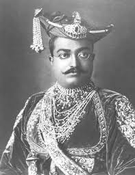
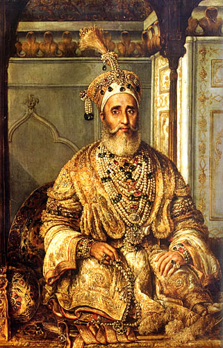

introduction
The revolt of 1857 was the conscious beginning of the Independence struggle against the colonial tyranny of the British. There are various names for the revolt of 1857 – India’s First War of Independence, Sepoy Mutiny, etc. The revolt began on May 10, 1857, at Meerut as a sepoy mutiny. It was initiated by sepoys in the Bengal Presidency against the British officers. The Revolt of 1857 was a big event in India’s history. It happened because many Indians were unhappy with British rule. This revolt is also called the Indian Rebellion of 1857 or the First War of Independence. It was a time when Indians fought against the British to try to get their freedom. Before the revolt, there were many reasons why people were upset. Soldiers in the British army, called sepoys, were paid very little and treated badly. This made them angry. The British also interfered with Indian customs and religions, which made people feel disrespected. On top of that, the British took over Indian kingdoms using unfair rules like the Doctrine of Lapse, which angered Indian rulers. The revolt started in 1857 in Meerut when Indian soldiers refused to use cartridges, they believed were greased with animal fat, which was against their religious beliefs. This small event led to a big rebellion that spread to many parts of India. It wasn’t just soldiers who rebelled; ordinary people like farmers and leaders like Rani Lakshmibai also joined in. During the revolt, important leaders like Mangal Pandey and Rani Lakshmibai showed great bravery. They became symbols of the fight against British rule. The British fought back harshly, and many people suffered on both sides. Even though the revolt was eventually put down, it had a lasting impact. It made the British government change how they ruled India. It also inspired later movements for independence. The Revolt of 1857 showed that Indians were ready to fight for their rights and freedom.
Key Leaders
Profiles of the brave leaders who led the revolt against the British Empire.
Rani Lakshmibai
Rani Lakshmibai, also known as the "Rani of Jhansi," was a courageous and influential leader during the Revolt of 1857. After the death of her husband, Rani Lakshmibai took charge of the kingdom of Jhansi. When the British refused to recognize her adopted son as the heir to the throne and tried to annex Jhansi, she led her forces into battle. Her bravery and military strategies inspired many to join the fight against British rule. Although Jhansi ultimately fell to the British, Rani Lakshmibai's legacy as a symbol of resistance and female empowerment remains strong.
Mangal Pandey
Mangal Pandey was a significant figure during the Revolt of 1857.He was a sepoy (Indian soldier) in the British East India Company's army. In March 1857, at the Barrackpore cantonment near Calcutta (now Kolkata), Mangal Pandey refused to use the new cartridges rumored to be greased with animal fat. This refusal was based on religious beliefs because the fat used was offensive to both Hindus and Muslims.Mangal Pandey's act of defiance sparked a larger protest among the sepoys in Barrackpore. His bravery and willingness to stand up against the unjust practices of the British became a rallying point for other sepoys who were also discontented with British rule. Although Mangal Pandey was eventually captured and executed by the British, his actions became symbolic of the sepoys' resistance and contributed to the broader revolt that followed.

Nana Sahib
Nana Sahib, also known as Dhondu Pant, was a prominent figure in the revolt. He was the adopted son of the exiled Peshwa Baji Rao II, a former Maratha ruler. When the British refused to grant him his adopted father's pension after his death, Nana Sahib became a staunch opponent of British rule. He played a key role in the rebellion in Kanpur, where British forces suffered heavy losses during the siege of Cawnpore (Kanpur). Nana Sahib's leadership and military actions showcased the organized resistance of Indian forces against the British.
Bahadur Shah II
Bahadur Shah II, also known as Bahadur Shah Zafar, was the last Mughal emperor and became a symbolic leader of the revolt. Although he was a figurehead with limited political power by the time of the revolt, Bahadur Shah II's lineage and status as the nominal ruler of Delhi gave legitimacy to the uprising. He was proclaimed the leader of the rebellion in Delhi, and his authority served as a unifying force for various groups fighting against British rule in the region. These civilian leaders, along with the sepoys like Mangal Pandey, played pivotal roles in shaping and leading the Revolt of 1857. Their bravery, strategic leadership, and commitment to the cause of independence inspired a sense of unity and defiance among the Indian population during one of the most significant chapters in India's struggle against colonialism.
Timeline of Revolt of 1857
.png)
.jpeg)